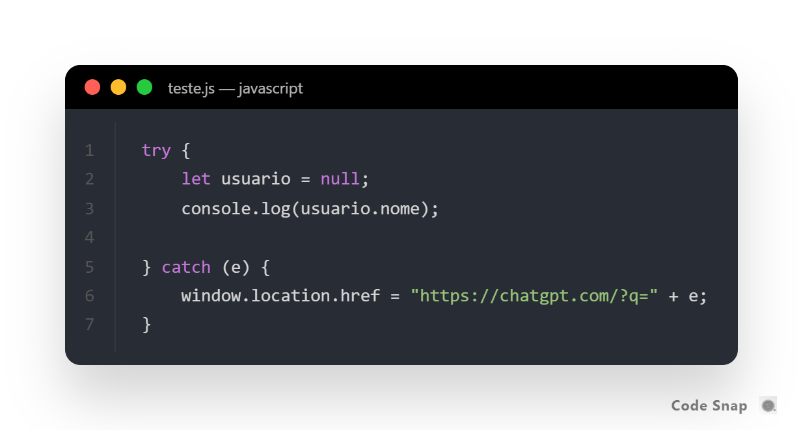
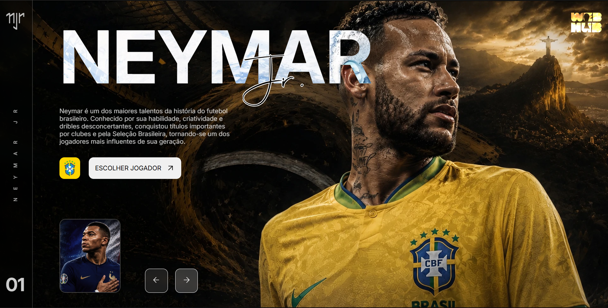

Lionel Messi
Frontend Developer — HTML, CSS, JavaScript
| Tecnologia | Crescimento |
|---|---|
| HTML | ↑ 12% |
| CSS | ↑ 9% |
| JavaScript | ↑ 15% |
| Java | ↑ 7% |
Frontend Developer — HTML, CSS, JavaScript
Web Developer — HTML, JavaScript

Debugar nunca foi tão fácil

Comunidade de Devs

Site sobre a craques da copa finalizado!